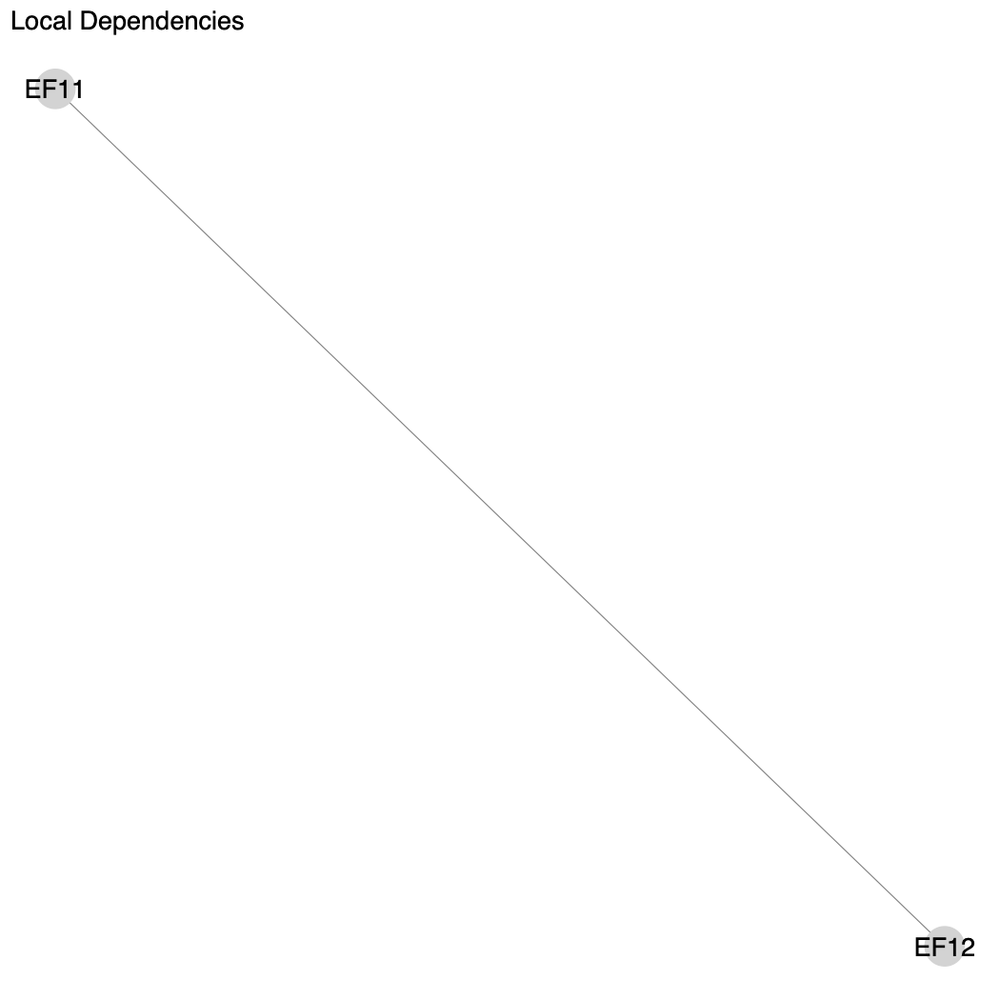
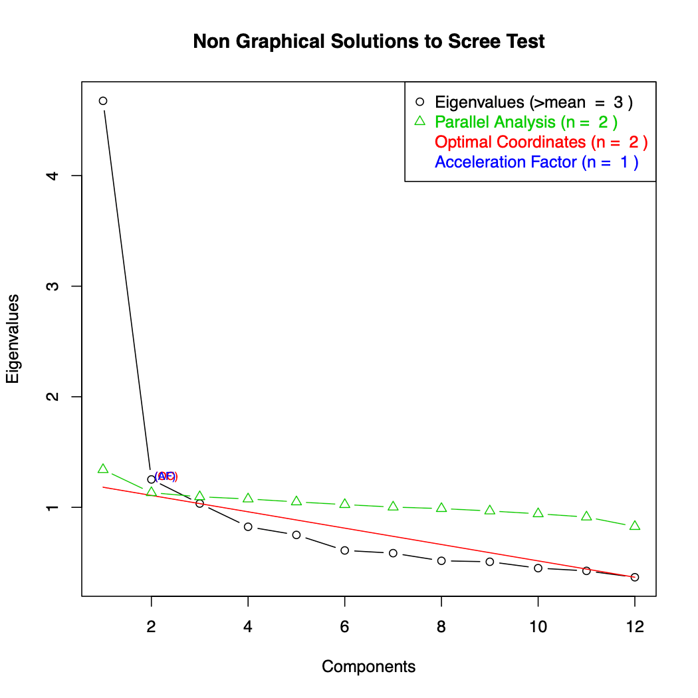
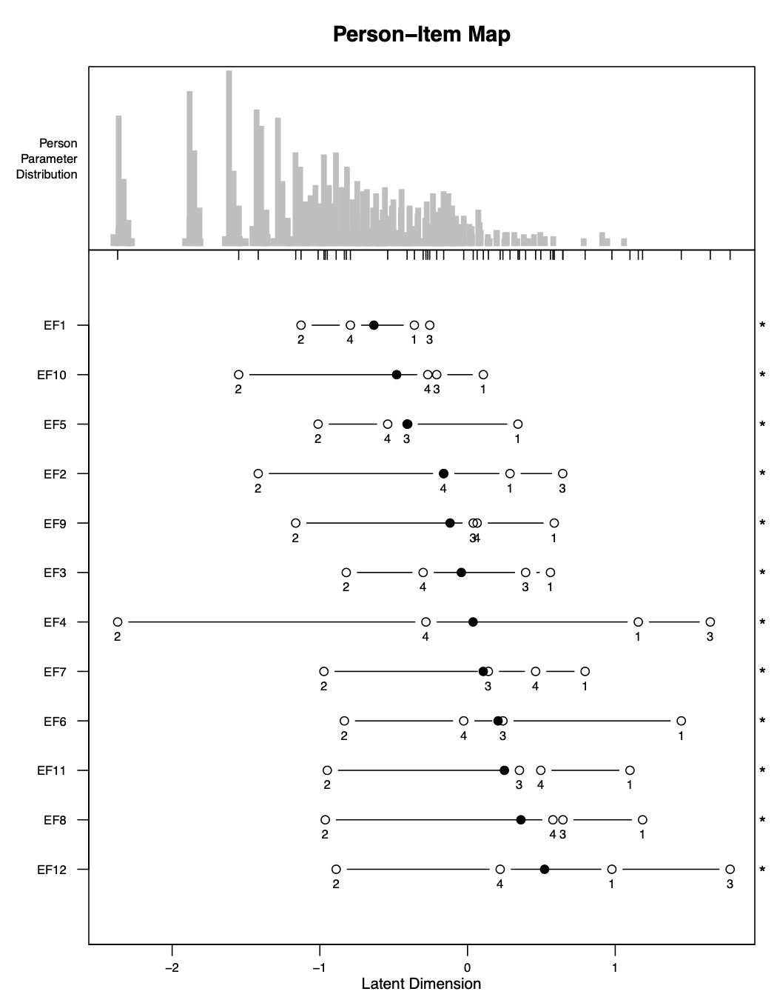

3 - Análisis Rasch con los datos de adultos de MDS
Source:vignettes/c3_rasch_adults_ES.Rmd
c3_rasch_adults_ES.RmdEstructura
Para realizar el Análisis Rasch para adultos, solo se necesita usar
una función: rasch_mds(). Esto se conoce como una “función
de envoltura” (wrapper function). Una función de envoltura es
una función que facilita el uso de otras funciones. En nuestro caso,
rasch_mds() utiliza todas las otras funciones
rasch_*() para realizar el análisis. Estas otras funciones
rasch_*() usadas para adultos son:
rasch_DIF()rasch_drop()rasch_factor()rasch_model()rasch_rawscore()rasch_recode()rasch_rescale()rasch_split()rasch_testlet()
Solo necesitas usar la función rasch_mds(). Pero si
desea realizar su análisis de una manera más personalizada, puede
trabajar directamente con las funciones internas.
Salida
Después de cada iteración del Modelo Rasch, los códigos anteriores producen una variedad de archivos que le dirán qué tan bien los datos se ajustan a las suposiciones del modelo en esta iteración. Los archivos más importantes son los de abajo. Explicaremos cada uno en detalle a través de nuestro ejemplo.
-
LID_plot.pdf- muestra elementos correlacionados -
LID_above_0.2.csv- correlaciones entre elementos correlacionados -
parallel_analysis_scree.pdf- gráfico de scree -
bifactor_analysis.pdf- cargas de factores -
PImap.pdf- ubicaciones de personas y ítems, ordenamiento de umbrales -
item_fit.xlsx- ajuste de ítems -
Targetting.csv- fiabilidad del modelo
Argumentos de rasch_mds()
En esta sección examinaremos cada argumento de la función
rasch_mds(). El archivo de ayuda para la función también
describe los argumentos. Se puede acceder a los archivos de ayuda para
las funciones en R escribiendo ? antes del
nombre de la función, de esta manera:
?rasch_mdsA continuación se muestra un ejemplo de uso de la función
rasch_mds():
rasch_mds(
df = df_adults,
vars_metric = paste0("EF", 1:12),
vars_id = "HHID",
vars_DIF = c("sex", "age_cat"),
resp_opts = 1:5,
max_NA = 2,
print_results = TRUE,
path_parent = "/Users/lindsaylee/Desktop/",
model_name = "Start",
testlet_strategy = NULL,
recode_strategy = NULL,
drop_vars = NULL,
split_strategy = NULL,
comment = "Initial run"
)El primer argumento es df. Este argumento es para los
datos. El objeto de datos debe ser datos de encuestas individuales, con
una fila por persona. Aquí los datos se almacenan en un objeto
df_adults, que es un base de datos incluido en el
paquetewhomds. Para obtener más información sobre
df_adults, consulta su archivo de ayuda
ejecutando:?df_adults
El segundo argumento es vars_metric, que es igual a un
vector de caracteres de los nombres de columna para los elementos a usar
en el Análisis de Rasch. Aquí es igual a
paste0("EF", 1:12), que es un vector de caracteres de
longitud 12 de los nombres de columna EF1,
EF2, … EF11 y EF12.
El siguiente argumento es vars_id, que es el nombre de
la columna utilizada para identificar de forma única a los individuos.
Aquí la columna de ID se llama HHID.
El siguiente argumento es vars_DIF. Es igual a un vector
de caracteres con los nombres de las columnas que se utilizan para
analizar el funcionamiento diferencial de elementos (DIF). DIF se
tratará con más detalle en las secciones posteriores. Aquí
vars_DIF es igual a un vector de caracteres de longitud dos
que contiene el nombre de las columnas "sex" y
"age_cat".
El siguiente argumento es resp_opts. Este es un vector
numérico con las posibles opciones de respuesta para
vars_metric. En esta encuesta, las preguntas
EF1 a EF12 tienen las opciones de respuesta 1
a 5. Entonces, resp_opts es igual a un vector numérico de
longitud 5 con los valores 1,
2,3, 4 y 5.
El siguiente argumento es max_NA. Este es un valor
numérico para el número máximo de valores faltantes permitidos para que
una persona aún se tenga en cuenta en el análisis. El Análisis de Rasch
puede manejar a personas que tienen algunos valores faltantes, pero
demasiados causarán problemas en el análisis. En general, todos los
individuos en la muestra deben tener menos del 15% de valores faltantes.
Aquí max_NA es 2, lo que significa que se
permite que los individuos tengan un máximo de dos valores faltantes de
las preguntas en vars_metric para que aún se incluyan en el
análisis.
El siguiente argumento es print_results, que es
TRUE o FALSE. Cuando es TRUE, los
archivos se guardarán en su computadora con los resultados de la
iteración Rasch. Cuando es FALSE, los archivos no se
guardarán.
El siguiente argumento es path_parent. Esta es una
cadena con la ruta a la carpeta donde se guardarán los resultados de
múltiples modelos, asumiendo que print_results es
TRUE. La carpeta en path_parent contendrá
carpetas separadas con los nombres especificados en
model_name en cada iteración. En la ejecución de la función
anterior, todos los resultados se guardarán en el Desktop. Ten en cuenta
que al escribir rutas para R, todas las barras deberían
ser: /(NO \). Asegúrate de incluir un
/ final en el final de la ruta.
El siguiente argumento es model_name. Esto es igual a
una cadena donde le das un nombre del modelo que estás ejecutando. Este
nombre se usará como el nombre de la carpeta donde se guardará toda la
salida en su computadora, si print_results es
TRUE. El nombre que le des debe ser corto pero informativo.
Por ejemplo, puede llamar a su primera ejecución “Start”, como se llama
aquí. Si creas un testlet en su segunda ejecución, quizás puedas
llamarlo “Testlet1”, etc. Elije lo que sea significativo para tí.
Los siguientes argumentos son testlet_strategy,
recode_strategy, drop_vars y
split_strategy. Estos son argumentos que controlan cómo se
usan los datos en cada iteración del Modelo Rasch. Cada uno será
discutido con más detalle en secciones posteriores. Aquí están todos
configurados en NULL, lo que significa que no se usan en la
iteración del Análisis Rasch que se muestra aquí.
El último argumento es comment. Esto es igual a una
cadena en la que puedes escribir cierta información de texto libre sobre
la iteración actual para que cuando veas los resultados más adelante
puedas recordar lo que hiciste y por qué lo hiciste. Es mejor ser más
detallado, porque olvidarás por qué eligiste ejecutar el modelo de esta
manera en particular. Este comentario se guardará en un archivo
Comment.txt. Aquí el comentario es solo
"Initial run".
Ajustar los datos
A continuación, discutiremos los argumentos que dan instrucciones sobre cómo ajustar los datos. Es posible que estas partes no sean del todo significativas ahora, pero lo serán aún más después de que pasemos por un ejemplo.
Crear testlets
Si deseas crear testlets, es decir, sumar los ítems en súper-ítems
para corregir la dependencia de los ítems, luego pasa una estrategia
para hacer testlets al argumento testlet_strategy.
testlet_strategy es una lista con un elemento de la lista
por testlet que deseas crear. Cada elemento de la lista debe ser un
vector de caracteres de los nombres de columna para usar para el
testlet. Opcionalmente, puede nombrar los elementos de la lista para dar
nombres personalizados a los nuevos testlets. Sin nombres especificados,
los nuevos testlets serán los nombres de columna originales separados
por “_“.
Por ejemplo, imagine que desea hacer dos testlets: un testlet de las
variables EF4, EF6 y EF8 con un
nuevo nombre de new, y otro testlet de EF5 y
EF7, sin un nuevo nombre especificado. Entonces deberías
especificar testlet_strategy como lo siguiente:
Recodificación
Si deseas recodificar las opciones de respuesta, es decir, cambiar
las opciones de respuesta para crear un ordenamiento estocástico,
entonces pasa una estrategia para la recodificación al argumento
recode_strategy. recode_strategy toma la forma
de una lista nombrada, con un elemento de la lista por estrategia de
recode. Los nombres de la lista son los grupos de nombres de columna que
se deben usar para cada estrategia de recodificación, separados solo por
“,”. Cada elemento de la lista es un vector numérico que proporciona las
nuevas opciones de respuesta para asignar las variables.
Por ejemplo, si desea combinar las dos últimas opciones de respuesta
de las variables EF1 y EF2, y combinar las dos
primeras opciones de respuesta de EF3, entonces
establecería recode_strategy como lo siguiente:
Eliminar variables
Si deseas eliminar cualquier ítem de tu análisis, tal vez en el caso
de un ajuste extremadamente deficiente, configura drop_vars
como un vector de caracteres de los nombres de columna para que se
eliminen del análisis.
Por ejemplo, si los ítems EF4 y EF7 eran
ítems extremadamente mal ajustados, entonces podrían eliminarse del
análisis especificando drop_vars como lo siguiente:
Dividir
Si deseas dividir los ítems por subgrupos, tal vez en el caso de
funcionamiento diferencial de ítems (DIF) alto, a continuación, das las
instrucciones para su estrategia de división en el argumento
split_strategy.
La división de ítems implica tomar un solo ítem y separarlo en dos o
más ítems para diferentes grupos. Por ejemplo, si quisiéramos dividir un
ítem var por sexo, crearíamos dos
ítems:var_Male y var_Female.
var_Male sería equivalente a var para todos
los encuestados que son hombres, y NA para los encuestados
que son mujeres. var_Female sería equivalente a
var para todos los encuestados que son mujeres, y
NA para los encuestados que son hombres.
split_strategy toma la forma de una lista nombrada. Hay
un elemento de la lista por variable para la que divides. Cada elemento
de la lista debe ser un vector de caracteres de los nombres de columna
para dividir. Los nombres de la lista son las variables para las que
divides cada grupo de variables.
Por ejemplo, si quisiéramos dividir las variables EF1 y
EF2 por sex, y dividir EF3 por la
categoría de edad age_cat, entonces especificaríamos
split_strategy como la siguiente:
Sin embargo, debido a que esperamos una cierta cantidad de DIF al
medir la discapacidad, especialmente por sexo y edad, rara vez usamos
esta opción. Para no realizar ninguna división, deje
split_strategy como su valor predeterminado de
NULL.
Ejemplo
A continuación, crearemos una métrica utilizando los datos de muestra
df_adults utilizando las preguntas de factores ambientales
(EF, por sus siglas en inglés) del cuestionario. Estas son las preguntas
EF1 a EF12.
Start
Comenzaremos intentando ejecutar el modelo sin realizar ningún ajuste en nuestros datos. Para ejecutar este modelo, ejecuta un comando que sea similar a este:
start <- rasch_mds(
df = df_adults,
vars_metric = paste0("EF", 1:12),
vars_id = "HHID",
vars_DIF = c("sex", "age_cat"),
resp_opts = 1:5,
max_NA = 2,
print_results = TRUE,
path_parent = "/Users/lindsaylee/Desktop/",
model_name = "Start",
testlet_strategy = NULL,
recode_strategy = NULL,
drop_vars = NULL,
split_strategy = NULL,
comment = "Initial run"
)Es posible que el código que ejecutas no sea exactamente el mismo,
porque, por ejemplo, el directorio que usas para
path_parent será específico para tu máquina, y puedes
elegir un model_name y comment diferentes para
tu modelo.
Al ejecutar este comando, se imprime los resultados en tu máquina
(porque print_results es TRUE), también está
guardando algo de salida en un objeto en el entorno global de
R llamado start. Este objeto es una lista con
tres elementos: uno llamado df, uno llamado
vars_metric y uno llamado df_results.
df contiene los datos con las variables transformadas
utilizadas para crear la puntuación y las puntuaciones redimensionadas.
vars_metric es un vector de caracteres de los nombres de
vars_metric después de transformar las variables.
df_results es un marco de datos con una fila y una columna
para cada una de las estadísticas principales para evaluar las
suposiciones del modelo de Rasch. df_results de múltiples
modelos se pueden combinar para crear un marco de datos que le permita
comparar rápidamente diferentes modelos.
No es necesario guardar la salida de rasch_mds() en un
objeto en el entorno global, pero facilita la manipulación de la salida
resultante para determinar qué ajustes hacer a tus datos en la siguiente
iteración.
Después de ejecutar este comando, se guardarán varios archivos en la
carpeta que especificó. Va a la carpeta path_parent, y
verás una nueva carpeta con el nombre que especificó en
model_name. Dentro de esa carpeta, habrá muchos archivos.
Nos centraremos en los más importantes. Lee nuevamente la Sección
@ref(reparación) para ver cómo los diferentes suposiciones del Modelo
Rasch se afectan entre sí y para comprender por qué revisaremos los
archivos importantes en este orden particular.
Primero revisaremos la dependencia local del artículo de los
artículos. Podemos verificar esto mirando los archivos
LID_plot.pdf yLID_above_0.2.csv.
LID_above_0.2.csv da las correlaciones de los residuos que
están por encima de 0.2, y LID_plot.pdf es una
visualización de estas correlaciones. De estos archivos, podemos ver que
los elementos EF11 y EF12 están
correlacionados. El valor de la correlación es aproximadamente 0.47.
Estos dos elementos tienen que ver con la forma en que se facilita o
dificulta el trabajo (EF11) y la escuela
(EF12). Conceptualmente, tiene sentido que las respuestas
de las personas a estas dos preguntas estén relacionadas. Nos ocuparemos
de esta correlación en la próxima iteración del modelo.

A continuación, investigaremos la unidimensionalidad del modelo
analizando el archivo parallel_analysis_scree.pdf. Esto es
lo que se conoce como una “gráfico scree”. Un gráfico scree muestra los
valores propios (eigenvalues) de nuestro modelo e indica
cuántas dimensiones subyacentes tenemos en nuestro cuestionario. Con
este gráfico, esperamos ver una disminución muy marcada después del
primer valor propio a la izquierda, y que el segundo valor propio caiga
por debajo de la línea verde del “Parallel Analysis”. Esto
significaría que tenemos una dimensión subyacente que es muy sólida en
nuestros datos, y cualquier otra dimensión que se calcule tendrá muy
poca influencia en el modelo. En nuestro gráfico, vemos una disminución
muy marcada después del primer valor propio, y la línea verde cruza la
línea negra después del segundo factor. Esto es suficiente para
confirmar la unidimensionalidad para el modelo.

Otro archivo importante que podemos examinar es el
PImap.pdf. Este es el “Mapa persona-ítem”, y muestra
personas y ítems en el mismo continuo. El eje horizontal en la parte
inferior de la figura es este continuo, etiquetado como la “dimensión
latente”. La parte superior de la figura está etiquetada como
“distribución de parámetros de persona”. Esta es la distribución de las
puntuaciones de las personas en el continuo. Puede mostrarle si, por
ejemplo, tiene más personas en un extremo de la escala u otro.

La parte más grande de esta figura muestra dónde se ubican los
umbrales para cada elemento en el continuo. Los umbrales están
etiquetados con números: el primer umbral está etiquetado como “1”, el
segundo está etiquetado como “2”, y así sucesivamente. El punto negro es
el promedio de las ubicaciones de todos estos umbrales. Las estrellas en
el lado derecho de la figura indican si los umbrales están o no fuera de
orden. Por ejemplo, puedes ver para EF1, los umbrales están
ordenados 2, 4, 1, 3 que están claramente fuera de orden. De hecho, en
este caso, todos los elementos tienen umbrales fuera de orden. Es
probable que esto sea algo de lo que tengamos que ocuparnos más
adelante, pero primero nos encargaremos de la dependencia del
artículo.
Otro archivo importante que podemos analizar es
item_fit.csv. Este archivo da las estadísticas de ajuste
para cada elemento. Las dos estadísticas de ajuste utilizadas aquí son
“outfit” e “infit”, que se muestran en las columnas
i.outfitMSQ e i.infitMSQ. Ambos son similares,
pero el outfit es más sensible a los valores atípicos. En general,
esperamos que estas cifras estén lo más cerca posible de 1. Si están por
debajo de 1, entonces indica que el ítem está “overfitting”.
“Overfit” se refiere a la situación cuando los ítems se ajustan
“demasiado cerca” al modelo. Si estas estadísticas son mayores que 1,
entonces indican que los ítems son “underfitting”.
“Underfit” se refiere a la situación cuando los ítems no se
ajustan bien al modelo. Underfit es más grave que
overfit. Esperamos en general que el infit y el
outfit de los artículos estén entre 0.5 y 1.5. Si son menos de
0.5, las medidas de fiabilidad para el modelo pueden ser engañosamente
altas, pero aún se pueden usar las puntuaciones. Si están entre 1.5 y
2.0, esta es una señal de advertencia de que los ítems pueden estar
causando problemas y usted podría comenzar a considerar ajustar los
datos para mejorar el ajuste. Si son mayores que 2.0, las puntuaciones
calculadas pueden estar significativamente distorsionadas y se deben
tomar medidas para ajustar los datos para mejorar el ajuste.
En este caso, todos los artículos tienen estadísticas infit y outfit entre 0.5 y 1.5, lo que es bueno.
Para analizar el ajuste global del modelo, podemos abrir el archivo
Targeting.csv. Este archivo proporciona la media y la
desviación estándar de las capacidades de la persona y de las
dificultades del ítems. También proporciona el “índice de separación de
personas” o PSI por sus siglas en inglés, que es una medida de
fiabilidad para el modelo. Esperamos que este valor sea lo más cercano
posible a 1. En general, es aceptable si esta cifra está por encima de
0.7, aunque esperamos obtener valores tan altos como 0.8 o 0.9. Para
nuestro modelo aquí, nuestro PSI es 0.82, lo cual es muy bueno.
Testlet1
Con nuestra próxima iteración del modelo, intentaremos abordar la
alta dependencia de elementos entre los elementos EF11 y
EF12. Haremos esto creando un testlet entre estos dos
elementos. Hacemos esto cambiando el argumento
testlet_stratey como se muestra a continuación. Le hemos
dado al nuevo testlet el nombre de workschool, pero puedes
nombrarlo como desees.
testlet1 <- rasch_mds(
df = df_adults,
vars_metric = paste0("EF", 1:12),
vars_id = "HHID",
vars_DIF = c("sex", "age_cat"),
resp_opts = 1:5,
max_NA = 2,
print_results = TRUE,
path_parent = "/Users/lindsaylee/Desktop/",
model_name = "Testlet1",
testlet_strategy = list(workschool = c("EF11", "EF12")),
recode_strategy = NULL,
drop_vars = NULL,
split_strategy = NULL,
comment = "Testlet: EF11,EF12 (LID>0.25)"
)Después de ejecutar este modelo, obtenemos un error:
#> Error in tapply(1L:ncol(X01beta), mt_ind, function(xin) { :
#> arguments must have same lengthEste error es un poco extraño. Pero a veces surgen errores como este
a causa de demasiadas NA en los datos o si no hay
suficientes personas que apoyen todas las opciones de respuesta
posibles. Veamos el archivo response_freq.csv para ver cómo
se distribuyen las opciones de respuesta. Podemos ver en este archivo
que hay muchos respaldos para todas las opciones de respuesta para todas
las preguntas excepto para nuestro nuevo testlet
workschool, que solo tiene 1 persona con una respuesta de
6, y nadie con las repuestas posibles de 5, 7 o 8. Quizás esto es lo que
está causando el problema.
Más sobre la recodificación
Primero vamos a discutir la recodificación con un poco más de detalle.
Cada pregunta con n opciones de respuesta tendrá
n-1 umbrales. El primer umbral (etiquetado con un “1” en el
mapa persona-ítem) es el punto entre la primera y la segunda opción de
respuesta donde un encuestado tiene la misma probabilidad de elegir
cualquiera de estas opciones de respuesta; el segundo umbral (etiquetado
con un “2” en el mapa persona-ítem) es el punto entre la segunda y la
tercera opción de respuesta donde un encuestado tiene la misma
probabilidad de elegir cualquiera de estas opciones de respuesta; y
así.
Queremos que nuestros umbrales en el mapa persona-ítem estén en el orden correcto: 1, 2, 3, 4 y así sucesivamente. Los umbrales desordenados indican un problema con nuestros ítems Por ejemplo, si los umbrales se enumeran en el orden 1, 2, 4, 3, entonces los datos nos dicen que es más probable que alguien supere el cuarto umbral antes del tercer umbral, lo cual no tiene sentido. Recodificamos las opciones de respuesta para crear menos umbrales, de modo que sea más fácil para ellos estar en orden.
Las funciones para realizar el Análisis Rasch cambian nuestras opciones de respuesta para que comiencen con 0. Esto se hace porque las funciones para realizar el análisis lo requieren. Por ejemplo, nuestra encuesta tiene preguntas que tienen opciones de respuesta que van del 1 al 5, pero internamente la función cambia estas opciones de respuesta para que varíen de 0 a 4. En consecuencia, es un poco más sencillo interpretar qué opciones de respuesta necesitan ser recodificadas directamente de las etiquetas de los umbrales. Por ejemplo, si un ítem está desordenado en el patrón 1, 2, 4, 3, esto significa que los umbrales 4 y 3 están fuera de orden. Esto también significa que podemos recodificar las opciones de respuesta transformadas 4 y 3 para combinar estos umbrales.
Cuando queremos recodificar un ítem, proporcionamos a la función
instrucciones sobre a qué asignar las opciones de respuesta. Por
ejemplo, digamos que un ítem var tiene umbrales
desordenados en el patrón 1, 2, 4, 3. Ahora queremos combinar el cuarto
y el tercer umbral para que el ítem se ordene. var tiene
opciones de respuesta que van de 0 a 4 (después de haber cambiado del
original por una sustracción de 1), por lo que queremos combinar las
opciones de respuesta 3 y 4 para el ítem para combinar estos dos
umbrales. Hacemos esto diciendo a la función que mapee las opciones de
respuesta actuales de 0, 1, 2, 3, 4 a 0, 1, 2, 3, 3. Esto significa que
todas las respuestas de “4” ahora se recodifican como “3” . Ahora solo
tendremos 4 opciones de respuesta diferentes, lo que significa que
tendremos 3 umbrales diferentes, que ahora esperamos que estén en el
orden correcto.
Esto se aclarará a medida que trabajemos en el ejemplo.
Testlet1_Recode1
En la siguiente iteración, intentaremos recodificar las opciones de respuesta de nuestro testlet para que el modelo pueda ejecutarse.
Ejecutaremos el comando como abajo:
testlet1_recode1 <- rasch_mds(
df = df_adults,
vars_metric = paste0("EF", 1:12),
vars_id = "HHID",
vars_DIF = c("sex", "age_cat"),
resp_opts = 1:5,
max_NA = 2,
print_results = TRUE,
path_parent = "/Users/lindsaylee/Desktop/",
model_name = "Testlet1_Recode1",
testlet_strategy = list(workschool = c("EF11", "EF12")),
recode_strategy = list(workschool = c(0,1,2,3,4,5,5,5,5)),
drop_vars = NULL,
split_strategy = NULL,
comment = "Testlet: EF11,EF12 (LID>0.25); Recode: workschool to 0,1,2,3,4,5,5,5,5"
)La diferencia entre el modelo Testlet1 y este modelo es que ahora
hemos agregado una estrategia de recodificación. Recodificaremos las
opciones de respuesta del testlet workschool a
0,1,2,3,4,5,6,7,7. Esto significa que todas las opciones de respuesta
permanecerán igual, excepto las opciones 5 a 8 están combinadas.
Después de ejecutar el comando, vemos que el modelo se puede calcular normalmente.
Primero verificamos LID_plot.pdf para ver si hemos
podido eliminar la correlación del elemento. En este archivo, vemos el
mensaje “No LID found”, lo que significa que nuestra estrategia
de prueba fue efectiva.
A continuación, verificamos el gráfico scree en el archivo
parallel_analysis_scree.pdf para asegurarnos de que se
mantiene nuestra unidimensionalidad. De hecho, parece muy similar al
modelo inicial, que es lo que esperamos.
A continuación, verificamos el mapa persona-ítem en
PImap.pdf. Podemos ver en este archivo que todos los
elementos aún están desordenados, por lo que es probable que esto sea lo
próximo que tengamos que cuidar en la próxima iteración del modelo.

Finalmente verificaremos el ajuste del ítem y el ajuste general del
modelo en item_fit.csv y Targeting.csv,
respectivamente. Podemos ver que todos estos valores siguen siendo
buenos: cada ítem aún tiene estadísticas de infit y outfit entre 0.5 y
1.5, y el PSI aún es 0.82.
Testlet1_Recode2
A continuación, intentaremos recodificar elementos para crear umbrales ordenados. Estamos más preocupados por tener los artículos individuales (todo lo que no es un testlet) ordenados.
Hay varias formas de elegir la estrategia de recodificación. En general, desea hacer la cantidad mínima de recodificación necesaria para alcanzar los umbrales ordenados. Primero intentaremos combinar los dos primeros umbrales para todos los elementos que no sean el testlet. Veremos para qué elementos funciona esto y probaremos una nueva estrategia en la siguiente iteración para los elementos en los que no funcionó.
testlet1_recode2 <- rasch_mds(
df = df_adults,
vars_metric = paste0("EF", 1:12),
vars_id = "HHID",
vars_DIF = c("sex", "age_cat"),
resp_opts = 1:5,
max_NA = 2,
print_results = TRUE,
path_parent = "/Users/lindsaylee/Desktop/",
model_name = "Testlet1_Recode2",
testlet_strategy = list(workschool = c("EF11", "EF12")),
recode_strategy = list(workschool = c(0,1,2,3,4,5,5,5,5),
"EF1,EF2,EF3,EF4,EF5,EF6,EF7,EF8,EF9,EF10" = c(0,1,1,2,3)),
drop_vars = NULL,
split_strategy = NULL,
comment = "Testlet: EF11,EF12 (LID>0.25); Recode: workschool to 0,1,2,3,4,5,5,5,5, everything else 0,1,1,2,3"
)Podemos ver en el nuevo mapa persona-ítem que esta estrategia no funcionó para ninguno de los ítems. Así que intentaremos una nueva estrategia en la próxima iteración.

También podemos verificar los otros archivos para ver si alguna otra suposición del Modelo Rasch ha sido violada con esta estrategia de recodificación. Pero debido a que estamos cambiando nuestra estrategia completamente en la próxima iteración, no es necesario prestar demasiada atención a los otros archivos para esta iteración.
Testlet1_Recode3
Desde el mapa persona-ítem para el modelo de inicio, podemos ver que nuestros ítems están desordenados de una manera un poco complicada: muchos ítems tienen umbrales en los órdenes 2, 4, 1, 3 o 2, 3, 4, 1. Por lo general, si un ítem tiene umbrales desordenados en un patrón bastante sencillo (por ejemplo, 1, 2, 4, 3 o 2, 1, 3, 4), entonces la estrategia de recodificación es sencilla. Por ejemplo, con un desorden de 1, 2, 4, 3, está claro que las opciones de respuesta 3 y 4 deberían estar combinadas. Con un desorden de 2, 1, 3, 4, entonces las opciones de respuesta de 1 y 2 deberían combinarse.
En nuestro caso, el desorden es bastante complicado, por lo que la estrategia de recodificación es menos directa y probablemente tendrá que ser más extrema. En esta iteración, intentaremos colapsar dos conjuntos de opciones de respuesta: colapsaremos 1 con 2 y 3 con 4, como se muestra a continuación.
testlet1_recode3 <- rasch_mds(
df = df_adults,
vars_metric = paste0("EF", 1:12),
vars_id = "HHID",
vars_DIF = c("sex", "age_cat"),
resp_opts = 1:5,
max_NA = 2,
print_results = TRUE,
path_parent = "/Users/lindsaylee/Desktop/",
model_name = "Testlet1_Recode3",
testlet_strategy = list(workschool = c("EF11", "EF12")),
recode_strategy = list(workschool = c(0,1,2,3,4,5,5,5,5),
"EF1,EF2,EF3,EF4,EF5,EF6,EF7,EF8,EF9,EF10" = c(0,1,1,2,2)),
drop_vars = NULL,
split_strategy = NULL,
comment = "Testlet: EF11,EF12 (LID>0.25); Recode: workschool to 0,1,2,3,4,5,5,5,5, everything else 0,1,1,2,2"
)¡Podemos ver con esta estrategia de recodificación que los umbrales
ahora están ordenados para la mayoría de los artículos! El único
elemento para el que no funcionó es EF6, para lo cual
tendremos que probar una estrategia diferente en la próxima
iteración.

Avanzamos en nuestro desordenamiento de umbrales, pero debemos
asegurarnos de que las otras suposiciones del Modelo Rasch no se hayan
violado con esta nueva estrategia. Verificamos LID_plot.pdf
y vemos que todavía hemos logrado la independencia del elemento. También
verificamos el gráfico scree en parallel_analysis_scree.pdf
para ver si todavía tenemos unidimensionalidad. Finalmente, también
verificamos item_fit.csv y Targeting.csv y
vemos que los valores también son aceptables en estos archivos. Así que
procederemos con una estrategia de recodificación alterada en la
siguiente iteración.
Testlet1_Recode4
Todavía tenemos dos elementos desordenados: EF6 y
workschool. Por lo general, no nos preocupa que los
testlets se desordenen porque no son elementos incluidos originalmente
en el cuestionario. Podríamos recodificar workschool si el
ajuste del ítem fuera muy pobre, pero en nuestro modelo mantiene el
ajuste adecuado del ítem según las estadísticas de infit y
outfit, por lo que no lo recodificaremos.
Por lo tanto, en esta iteración solo intentaremos resolver el
desorden de EF6. Intentaremos combinar las tres opciones de
respuesta del medio, como se muestra a continuación.
testlet1_recode4 <- rasch_mds(
df = df_adults,
vars_metric = paste0("EF", 1:12),
vars_id = "HHID",
vars_DIF = c("sex", "age_cat"),
resp_opts = 1:5,
max_NA = 2,
print_results = TRUE,
path_parent = "/Users/lindsaylee/Desktop/",
model_name = "Testlet1_Recode4",
testlet_strategy = list(workschool = c("EF11", "EF12")),
recode_strategy = list(workschool = c(0,1,2,3,4,5,5,5,5),
"EF1,EF2,EF3,EF4,EF5,EF7,EF8,EF9,EF10" = c(0,1,1,2,2),
EF6 = c(0,1,1,1,2)),
drop_vars = NULL,
split_strategy = NULL,
comment = "Testlet: EF11,EF12 (LID>0.25); Recode: workschool to 0,1,2,3,4,5,5,5,5, everything else except EF6 to 0,1,1,2,2, EF6 to 0,1,1,1,2"
)Después de ejecutar este modelo, vemos que se ha resuelto el desorden
para EF6. ¡Todos los artículos individuales ahora tienen
umbrales ordenados!

También revisaremos los otros archivos para asegurarnos de que se
hayan mantenido nuestros otras suposiciones del Modelo Rasch.
Verificamos LID_plot.pdf y vemos que todavía hemos logrado
la independencia del ítem. También verificamos el gráfico scree en
parallel_analysis_scree.pdf para ver si todavía tenemos
unidimensionalidad. Finalmente, también verificamos
item_fit.csv y Targeting.csv y vemos que los
valores también son aceptables en estos archivos.
Todas nuestras suposiciones del Modelo Rasch se han alcanzado
razonablemente, ¡así que esto significa que podemos terminarnos! Hemos
terminado nuestro Análisis Rasch para este conjunto de preguntas. Los
datos con las puntuaciones se encuentran en el archivo
Data_final.csv. Discutiremos qué hacer con estos puntajes
en secciones posteriores.
Mejores prácticas
Lea el vignette Mejores prácticas con Análisis Rasch para aprender más sobre principios generales para usar.